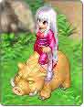

功能介绍
| 研发功能：研发功能分为二种，一种为游戏接口中的「融炉合成」，另一种是使用帐篷，在玩家的家中「制作物品」。 | ||
「制作物品」必须进入玩家的家中才可以使用，当玩家们需要「制作」出所需的大型特殊器具和交通工具，只要备齐各种材料和工具，就可以开始体会组装的乐趣��！ | ||
|
捕捉功能： | ||
| 骑乘功能： 在飘流幻境中的宠物骑乘功能可是什么都可以骑喔！一般常见的牛、羊可以骑乘，就连天上飞的蜻蜓，地上爬的蚂蚁也可以骑乘，甚至于摩艾、岩怪 … 只要玩家您有本事，补捉得到的，都可以当作你的坐骑呢！当然��，还有其它更多特别的角色，就等玩家亲自进入游戏中试试看��！ | ||
| 快递功能： 玩家可以选择让您的宠物跟随着您出战之外，另一项功能就是 可以直接派宠物快递物品给其它玩家的功能，方便玩家及玩家间远距配送，即使是在练功或解任务无法抽身的时候，只要使用宠物快递功能，不管好友身在何处...都可以马上收到…是不是很贴心呢！
| ||
| 钓鱼功能： 因为小岛四周环海的关系， 所以钓鱼这项技能就应运而生�� ！在游戏设定中， 玩家只要有一把钓竿就可以在海边钓鱼，不过飘流的钓鱼不仅仅是钓鱼而已喔！玩家在钓鱼的过程中从一般的渔获 ，还可以钓到一些其它的材料喔，像是稀有的宝石、多种动物的毛皮、各种矿石、木头 … 等， 都有可能成为玩家的囊中之物！ 不但如此， 当玩家使用越高级的钓竿的时候 ，能 够钓到的东西也相对的越高级，玩家可以多多的尝试这不一样的钓鱼功能！
|